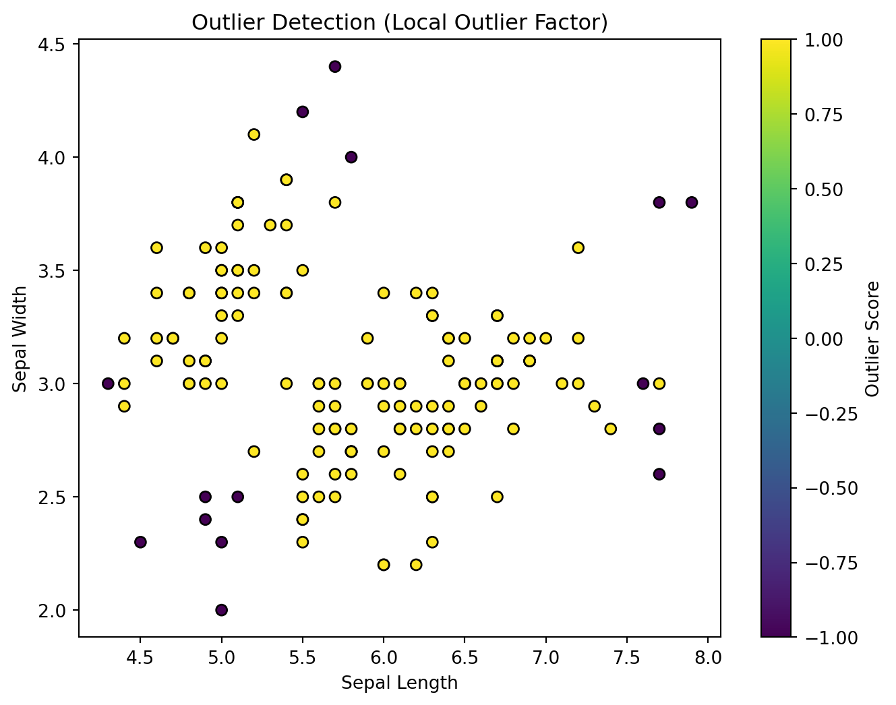

import pandas as pd
from sklearn.datasets import load_iris
from sklearn.neighbors import LocalOutlierFactor
import matplotlib.pyplot as plt
# Load Iris dataset
iris = load_iris()
# Create a DataFrame from the Iris dataset
iris_df = pd.DataFrame(data=iris.data, columns=iris.feature_names)
# Outlier Detection using Local Outlier Factor (LOF)
lof = LocalOutlierFactor(n_neighbors=20, contamination=0.1) # Adjust parameters as needed
outliers = lof.fit_predict(iris_df)Anomalies/Outliers Detection with Iris Dataset
Introduction
Outlier detection is a crucial task in data analysis, as it helps identify data points that deviate significantly from the rest of the data. These outliers can distort statistical analysis and affect machine learning models.
Why Outlier Detection Matters ?
Outlier detection is an essential step in data preprocessing, ensuring the reliability of statistical analysis and machine learning models. By identifying and removing outliers, we can:
Improve the accuracy of statistical measures: Outliers can inflate or deflate statistical measures like mean, median, and standard deviation, leading to inaccurate representations of the data distribution.
Enhance the performance of machine learning models: Outliers can bias machine learning algorithms, causing them to focus on the anomalous data points rather than the underlying patterns.
Gain a deeper understanding of the data: Outliers can represent important information, such as indicating unusual events or unexpected patterns, that warrant further investigation.
Common Outlier Detection Techniques
Various techniques can be employed to detect outliers, each with its strengths and limitations. Some popular methods include:
Interquartile Range (IQR) Method: This method identifies outliers as data points that fall outside a certain range, typically 1.5 times the IQR below the first quartile or above the third quartile.
Boxplot Method: Boxplots visually represent the distribution of data and highlight outliers as points outside the whiskers.
Z-score Method: This method measures the number of standard deviations a data point lies from the mean. Outliers are typically defined as points with Z-scores greater than 3 or less than -3.
Exploring the Iris Dataset
The Iris dataset is a widely used benchmark dataset in machine learning, containing information about the sepal and petal length and width of 150 iris flowers belonging to three distinct species. This dataset provides a perfect platform to explore outlier detection techniques due to its inherent variability and potential for anomalies.
LOF Parameters:
n_neighbors: This parameter defines the number of neighbors to consider when calculating local density. A higher value of n_neighbors can improve robustness but may miss subtle anomalies. contamination: This parameter represents the expected proportion of outliers in the dataset. Adjusting this value allows you to fine-tune the sensitivity of the algorithm.
Detecting Outliers in the Iris Data
In the provided Python code, we first load the Iris dataset using sklearn.datasets and create a Pandas DataFrame for easier manipulation. We then employ the LocalOutlierFactor class with specific parameters (n_neighbors=20 and contamination=0.1) to identify potential outliers.
Visualizing Outliers: A Clearer Picture
The code then utilizes matplotlib to visualize the results. It creates a scatter plot where the color of each point corresponds to its LOF score, with hotter colors signifying higher outlier scores. This visual representation allows us to easily identify data points that deviate significantly from the overall distribution and suspect them as outliers.
plt.figure(figsize=(8, 6))
plt.scatter(iris_df.iloc[:, 0], iris_df.iloc[:, 1], c=outliers, cmap='viridis', edgecolor='k')
plt.xlabel('Sepal Length')
plt.ylabel('Sepal Width')
plt.title('Outlier Detection (Local Outlier Factor)')
plt.colorbar(label='Outlier Score')
plt.show()
Unmasking the Anomalies: Insights and Implications
By analyzing the visualization, we can identify data points with high LOF scores, suggesting their potential outlier status. These outliers may represent genuine anomalies in the dataset, such as measurement errors or data points belonging to a different species altogether.
Understanding the source and implications of these outliers is crucial for data analysis tasks. For instance, we might choose to remove outliers before training machine learning models to avoid bias and improve accuracy. Alternatively, we might investigate the outliers further to understand their nature and potential contributions to the overall analysis.
Conclusion
Outlier detection is a critical component of data analysis, enabling us to identify and handle data points that deviate significantly from the expected patterns. Local Outlier Factor provides a powerful tool for outlier detection, offering valuable insights into the underlying structure of the data. By integrating outlier detection techniques into our data analysis workflow, we can ensure the quality and accuracy of our findings and make more informed decisions.
Feel free to adjust the parameters of the LocalOutlierFactor or visualize other combinations of features to conduct more in-depth outlier analysis on the Iris dataset.